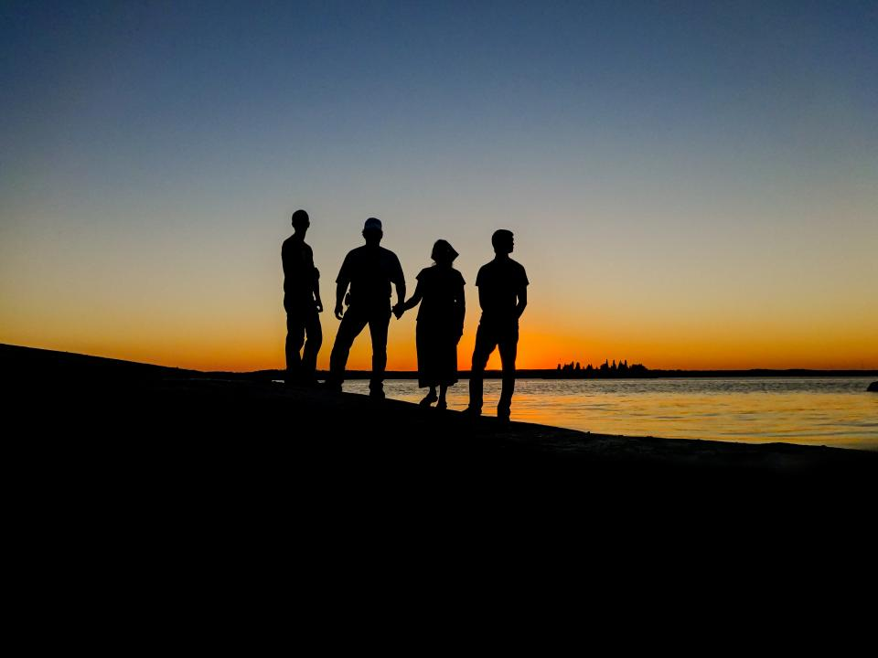
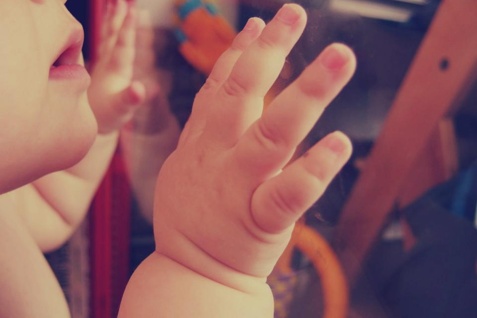

Năm 2026 của nhà Bin & Su
Bảy câu chuyện, từ tiếng pháo giao thừa đến cái ôm của bà đêm Giáng sinh.
Cuộn để xem lại`Tết ở quê nội
Cả nhà về quê từ hai ngày trước giao thừa. Su được bà phát lì xì đầu tiên, Bin ngủ gục trên vai bố giữa tiếng pháo hoa.
Bin tròn 1 tuổi
Một năm trước Bin còn nằm gọn trong hai bàn tay mẹ. Hôm nay Bin tự cầm thìa, tự cười, và tự chạy trốn khi bị bế đi tắm.

Sinh nhật Su 7 tuổi
Su tự chọn bánh vị dâu và đòi thổi nến ba lần. Bóng bay bay đầy nhà, đến tối bố vẫn còn nhặt được vài quả dưới gầm ghế.
Hè ở Đà Lạt
Chiếc xe bảy chỗ chạy qua từng con đèo, Su ngồi sát cửa sổ đếm thông. Chiều ra hồ, cả nhà đứng im nhìn mây xuống thấp.
Mở mục này

Biển Nha Trang
Su dặn bố đừng chụp lúc con ngã. Bố vẫn chụp, và đó là tấm cả nhà thích nhất.
Cuối tuần ở nhà
372 tấm ảnh không có địa điểm nổi tiếng nào, chỉ có bếp, phòng khách và những buổi chiều mưa. Nhiều người trong nhà nói đây mới là phần đẹp nhất.
Giáng sinh với bà
Bà đội mũ ông già Noel lệch một bên, Su hôn lên má bà. Tấm ảnh được xem lại nhiều nhất trong năm.
Cảm ơn một năm đã ở bên nhau
Ghép bốn tấm ảnh thích nhất thành dải ảnh như ở tiệm chụp, hoặc gửi cả cuốn tổng kết này cho ông bà.